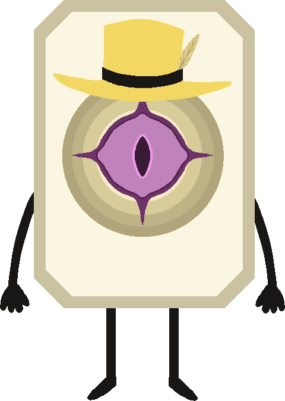
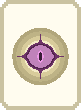

play
tutorial
trainer
collection
settings
quit
i
Ana Menüye Dön
⚙ Ayarlar
🔊 Ses
CHOOSE YOUR
NEXT RAUND
Raund
Score
0
STAGE
1/8
RAUND
1/3
STAGE
OKEY
$
0
i
Ana Menüye Dön
⚙ Ayarlar
🔊 Ses
Raund 1
Raund
Score
0
/
200
STAGE
1/8
RAUND
1/3
$
0
Meld
Open
Hand
Confirm
At
Taş Feda Et
Yem Seç
Sort Hand
Rank
Suit
Pass
OKEY
backup
0/2
Değnek
0/3

JOKERLER
TÜKETİLEBİLİR & GİZLİ PAKETLER
🎲 Yenile — 3
Haritaya Dön →
🏆 STAGE TAMAMLANDI!
İki ödül çarkı dönüyor…
🀄 KOLEKSİYON
← Geri